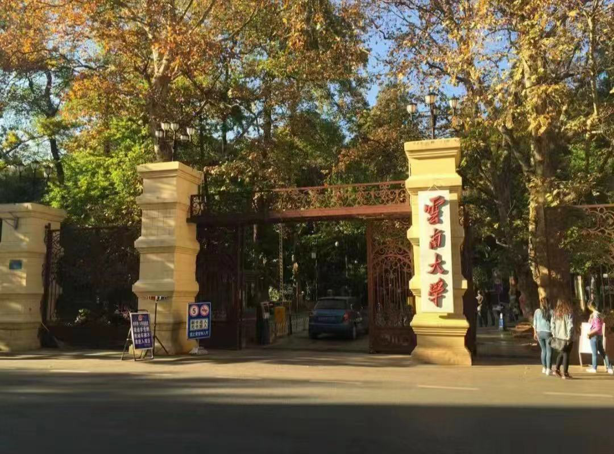

"Yunnan University: Inheriting a Century and Opening the Future"
云南大学位于昆明市，是中国教育部与云南省共同合作的全国重点大学，被确定为国家“双一流”建设高校， 同时也是“211工程”、一省一校、中西部高校基础能力建设工程的重要组成部分，是云南省大力支持的国家一流大学建设高校之一。 此外，云南大学还参与了“111计划”、卓越法律人才教育培养计划、卓越工程师教育培养计划、国家建设高水平大学公派研究生项目、 中国政府奖学金来华留学生接收院校等重要项目，同时是全国深化创新创业教育改革示范高校之一，还是中西部“一省一校”国家重点建设大学(Z14)联盟、 南亚东南亚大学联盟的牵头单位。
云南大学的历史可追溯至1922年，当时为东陆大学，后于1930年更名为省立东陆大学，1934年改称省立云南大学， 1938年升格为国立云南大学。1946年，被《不列颠百科全书》列为中国15所最具影响力的大学之一。1950年定名为云南大学，并于1958年划归云南省管理。 1978年被国务院确定为全国88所重点大学之一，1996年成为首批列入国家“211工程”的重点建设大学。1999年，云南政法高等专科学校并入云南大学。
截至2023年6月，云南大学设有呈贡和东陆两个校区，占地面积4367亩，校舍建筑面积超过133万平方米，馆藏图书超过400万册。学校下设28个学院， 开设84个本科专业，设有14个博士后科研流动站，22个一级学科博士学位授权点，1个专业博士学位授权点，42个一级学科硕士学位授权点， 26个专业硕士学位授权点。学校拥有3000余名教职员工，全日制本科生近17000人，全日制硕士研究生近12000人，博士研究生1500余人。
云南大学一直以来致力于高等教育和科研事业的发展，不断推动知识的进步，培养各个领域的未来领袖。 其在学术卓越、创新能力和文化遗产保护方面的承诺，使其成为国内外一流的学术机构，促进了知识的传承和社会的进步。